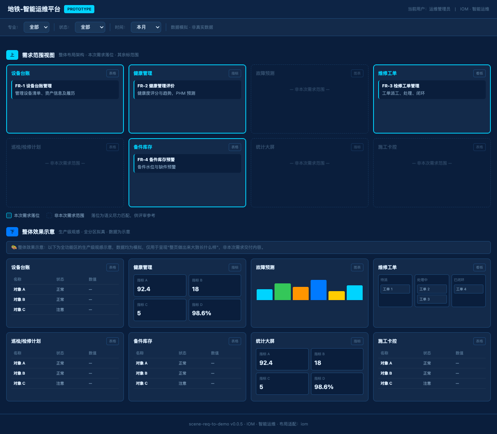
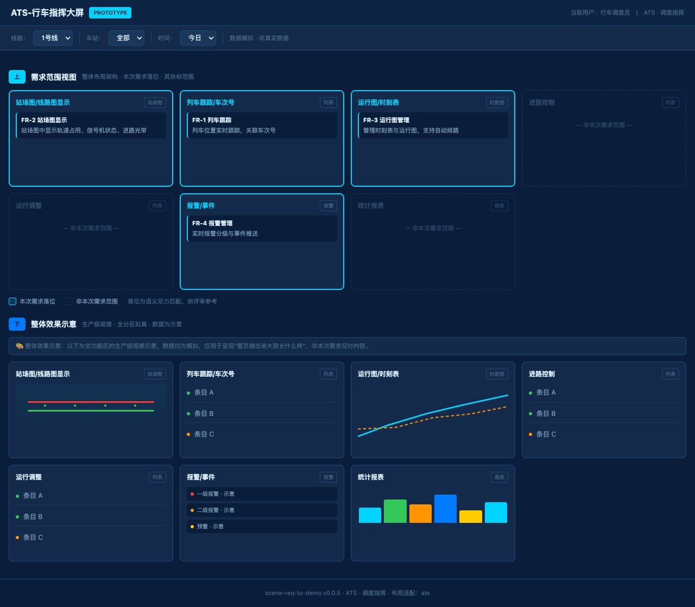
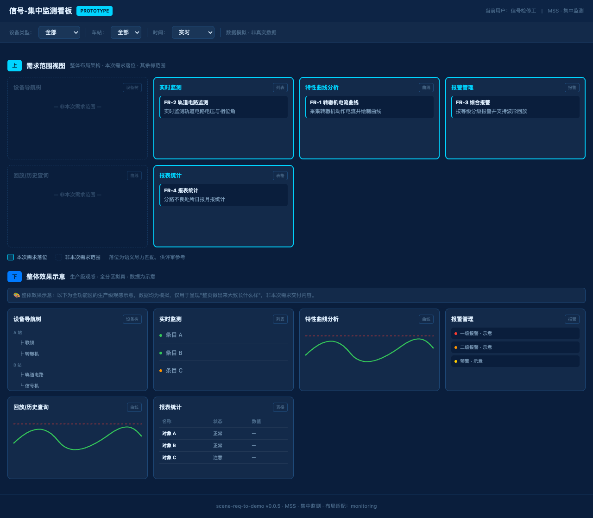
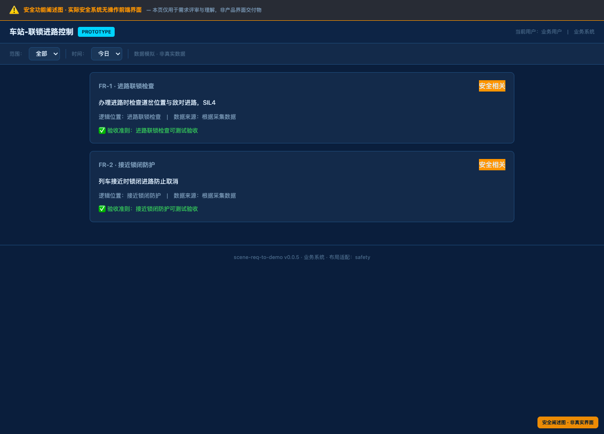

单一 Skill 覆盖从场景输入到双轨 Demo 交付的完整链路。核心特性：双轨 Demo、子系统自适应布局、安全标记、两段式约束版。
| 项 | 内容 |
|---|---|
| Skill 名 | scene-req-to-demo |
| 版本 | v0.0.5 |
| 依赖 | Python 3+（仅标准库）；零构建；脚本执行不进 LLM 上下文 |
| 输入 | 自然语言场景描述（中文，任意长度；可多轮批量） |
| 输出 | ① Markdown 六段式需求文档 ② 约束版 Demo（两段式）③ 创意版 Demo（仅非安全）④ 结构化 JSON |
| 核心能力 | 需求分析（5 锚点 + 2 扩展）+ 子系统路由 + 安全标记 + 分区落位 + GAP 纪律 + 铁路领域知识 |
脚本确定性生成 · 两段式布局 · 用于需求评审 · 所有场景都有
LLM 自由发挥 · 信息化趋势灵感 · 启发设计讨论 · 仅非安全子系统
safety / ats / ctc / monitoring / iom / general 六类子系统并适配布局；未命中则走通用分析。| 检查项 | 作用 |
|---|---|
5_anchors_per_fr | 每条 FR 含 5 锚点 |
6_section_completeness | 六段式完整 |
batch_dedup | 跨场景 FR 去重 |
cove_consistency | CoVe 一致性（防幻觉/过度拆分） |
demo_readiness | Demo 就绪度（FR 数量） |
safety_and_acceptance | 安全标注 + 验收准则 |
configurable_distribution | configurable 防摆设（全 true 告警） |
gap_discipline | 量化指标防编造（须标 [假设]/[GAP]） |
v0.0.5 核心布局。解决"单个/几个场景的需求不足以铺满整页"的问题：不硬把需求撑满页面，而是展示系统整体架构 + 需求在其中的位置。
渲染子系统整体布局架构（全部分区）。本次 FR 按语义落位到对应分区并高亮；无 FR 落入的分区标为虚线灰格「非本次需求范围」。带图例。凸显"这几条需求落在整个系统的哪几块"。
同一架构的生产级拟真观感——全部分区按类型（站场图/时距图/曲线/图表/表格/列表/指标/看板/报警/设备树）用拟真模板 + 示意数据渲染，呈现"整页做出来大致长什么样"。数据标注「示意」，非交付内容。
ZONE_TAXONOMY），FR 按 name+description+uiLocation+dataSource 对分区关键词计分落位。这是语义尽力匹配，不保证 100% 精准；给了参考模板才可精准。图中上为「需求范围视图」（仅本次 FR 高亮，其余标"非本次需求范围"）、下为「整体效果示意」（全分区生产级拟真）。点击放大查看。



图：不同子系统自动适配布局；地铁场景已无"站段/工班"层级（v0.0.5 修复的硬编码）
| subsystem | 场景 | 约束版布局 | 创意版 |
|---|---|---|---|
safety | 联锁/列控/防护等安全苛求 | 阐述图 + 横幅 | 不生成 |
ats | 行车指挥 | 两段式 | ✓ |
ctc | 调度集中 | 两段式 | ✓ |
monitoring | 集中监测 | 两段式 | ✓ |
iom | 智能运维 | 两段式 | ✓ |
general | 通用 | 两段式 | ✓ |
检测优先信任 FR 显式 safetyRelevance 标注；无标注才用强安全关键词兜底（排除 进路/道岔/闭塞/防护 等弱词，避免 ATS/CTC 误判为安全）；v0.0.5 修复的旧 bug 是 ATS 的"进路自动触发"被误判为 safety。

量化指标（响应时间/准确率/可用性等）无标准依据时必须标 [假设] 或 [GAP]，禁止凭空给确定数值。安全系统相关遵循 domain-railway.md 三条铁律。
支持 Claude Code / OpenCode / WorkBuddy / Amp。核心原则：只维护一份权威副本，其余位置全部软链，避免多副本升级漂移（v0.0.5 修复过的坑）。
# 安装（文件夹名稳定为 scene-req-to-demo）
git clone https://github.com/Githantao/scene-req-to-demo.git ~/.agents/skills/scene-req-to-demo
# 其余 agent 位置软链到权威副本
ln -sf ~/.agents/skills/scene-req-to-demo ~/.config/opencode/skills/scene-req-to-demo
ln -sf ~/.agents/skills/scene-req-to-demo ~/.workbuddy/skills/scene-req-to-demo
ln -sf ~/.agents/skills/scene-req-to-demo ~/.claude/skills/scene-req-to-demo
# 升级（原地，不产生新文件夹）
git -C ~/.agents/skills/scene-req-to-demo pull从 Release 页下载 scene-req-to-demo.zip（Assets），解压即稳定的 scene-req-to-demo/ 目录，覆盖旧安装。
-版本号 后缀，每次升级产生新文件夹，无法无缝覆盖。| Agent | Skills 目录 | 角色 |
|---|---|---|
| — | ~/.agents/skills/ | 权威副本（实体） |
| OpenCode | ~/.config/opencode/skills/ | 软链 |
| WorkBuddy | ~/.workbuddy/skills/ | 软链 |
| Claude Code | ~/.claude/skills/ | 软链 |
| 文件 | 作用 |
|---|---|
SKILL.md | 主入口：触发/步骤/Asset Loading Strategy |
DESIGN.md | 设计基准（维护者用，防跑飞；非运行时） |
assets/scripts/*.py | 5 脚本：analyze / validate-anchors / render-markdown / render-demo / build-creative |
assets/analysis-prompt.md | 核心分析指令 |
assets/requirement-writing-guide.md | FR 表述规范 |
assets/domain-railway.md | 铁路领域：安全篇 + 非安全篇 + 三铁律 |
assets/prototype-domain-ui.md | 四子系统分区拓扑 + 两段式说明 |
assets/prototype-tech-inspiration.md | 创意版技术灵感库 |
assets/prototype-template-detail.md | 创意版布局细节 |
assets/prototype-styles-tokens.md | 设计 tokens（配色/组件变量） |
assets/verification-checklist.md | 质量检查清单 |
assets/mermaid-rules.md | 图表规则 |
| 方式 | 示例 |
|---|---|
| 关键词（自动） | 场景需求 / 需求分析 / 分析以下场景 / 交接班 / 看板 / 填报 / 查询 / 原型生成 / 我想做一个... |
| 显式调用 | 使用 scene-req-to-demo 分析：... |
一段自然语言，如"分析以下场景需求：检修监督及卡控..."
Agent 返回需求名称+总体+FR，问"是否还有场景？"，可多轮补充。
问"是否有参考页？"→ 有则提供截图/HTML/描述，无则跳过。
validate-anchors 校验后，产出 Markdown + 约束版 + 创意版（非安全）。
所有产物均在 ./output/。
| # | 交付物 | 格式 | 说明 |
|---|---|---|---|
| 1 | 需求文档 | <标题>.md | 六段式 + 5 锚点 + 2 扩展 + Mermaid；安全场景含安全声明 |
| 2 | 约束版 Demo | <标题>.html | 两段式（上范围+下效果）；脚本生成；安全场景为阐述图 |
| 3 | 创意版 Demo | <标题>-creative.html | LLM 自由发挥；仅非安全；含 Vue，file:// 双击即用 |
| 4 | 结构化数据 | <标题>.json / merged.json | 完整 JSON 中间产物 |
<标题>-creative.tpl.html 是创意版的中间模板，build 成功后自动删除，非交付物（不会残留在 output）。example 字段提供模拟数据。输入："分析以下场景需求：地铁智能运维平台管理设备台账，检修工单流转闭环。"
# 地铁智能运维平台需求文档
## 一、业务背景及目标
提出方：运维管理部门 / 问题层级：... / 现状痛点：...
## 二、总体需求
地铁智能运维平台：管理设备台账、检修工单流转闭环...
## 三、功能需求
### FR-1 设备台账 `高优` `非安全相关`
| 锚点 | 内容 |
| 📍 页面位置 | ... | 🔗 数据来源 | ... |
| ✅ 验收准则 | ... |
### FR-2 检修工单 `高优` `非安全相关`
## 四、接口需求 — ...
## 五、数据需求 — ...
## 六、非功能性需求 — ...
## 附录：Mermaid 流程图命中关键词时注入铁路信号领域知识（domain-railway.md：安全篇 + 非安全篇 + 三铁律），并按子系统适配布局。
| 子系统 | 关键词（节选） |
|---|---|
safety | 联锁 / SIL / 故障导向安全 / 移动授权 / 防护包络 / ATP / ZC / VOBC / TACS / 移动闭塞 |
ats | ATS / 行车指挥 / 运行图 / 车次号 / 自动排路 / 扣车 / 跳停 |
ctc | CTC / 调度集中 / TDCS / 调度命令 / 时距图 |
monitoring | 集中监测 / 微机监测 / 动作电流 / 轨道电压 / 波形回放 |
iom | 智能运维 / 设备台账 / 检修 / 工单 / 健康管理 / 备件库存 |
未命中则走 general 通用分析。检测优先信任 FR 的 safetyRelevance 显式标注。
资产按阶段惰性加载；脚本代码不进 LLM 上下文（只进出 JSON），故两段式/拟真模板复杂度对上下文零成本。
| 场景 | 累计 | ≈token | 占 256K |
|---|---|---|---|
| 约束版（主评审产物） | ~44 KB | ~20k | ~8% |
| 常见路径（约束版+铁路） | ~53 KB | ~21k | ~8% |
| 最坏全量（含创意版+铁路+图表） | ~86 KB | ~27k–39k | 10%–15% |
v0.0.5 起 Demo 分双轨：约束版（脚本确定性、两段式、评审用）+ 创意版（LLM 自由、启发用）。旧版是单一脚本 Demo，已废弃。
因为单个/几个场景的需求往往不足以铺满整个前端页面。两段式上段展示"需求落在系统架构的哪几块"（其余标范围），下段展示"整页做出来的生产级观感"，不硬把需求撑满整页。
安全苛求系统（联锁/ATP 等）实际无操作前端界面，其 Demo 是"阐述图"（阐述安全功能逻辑），带横幅声明，且不生成创意版。
创意版的中间模板（LLM 写占位符 → build-creative.py 注入 Vue）。build 成功后自动删除，不会残留在 output。
多半是某处是独立实体副本（非软链）漂移成旧版。确保除 ~/.agents/skills/ 权威副本外，其余位置都是软链。
Vue 已内联无需 CDN。若空白，按 F12 查控制台，或 python3 -m http.server 8899 后访问 http://localhost:8899/xxx.html。
传整个 scene-req-to-demo/ 目录，或 git clone。其余位置软链到权威副本。